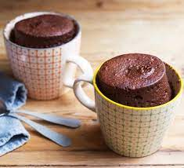

Mug Cake

DESCRIPTION
Need a quick chocolate fix? Try making this easy microwave mug cake with storecupboard ingredients. It's even
more delicious with a scoop of vanilla ice cream.
Ingredients
- 4 tbsp self-raising flour
- 4 tbsp caster sugar
- 2 tbsp cocoa powder
- 1 medium egg
- 3 tbsp milk
- 3 tbsp vegetable oil or sunflower oil
- a few drops of vanilla essence or other essence (orange or peppermint work well)
- 2 tbsp chocolate chips, nuts, or raisins etc (optional)
Steps
- Add 4 tbsp self-raising flour, 4 tbsp caster sugar and 2 tbsp cocoa powder to the largest mug you have (to
stop it overflowing in the microwave) and mix.
- Add 1 medium egg and mix in as much as you can, but don't worry if there's still dry mix left.
- Add the 3 tbsp milk, 3 tbsp vegetable or sunflower oil and a few drops of vanilla essence and mix until
smooth, before adding 2 tbsp chocolate chips, nuts, or raisins, if using, and mix again.
- Centre your mug in the middle of the microwave oven and cook on High for 1½ -2 mins, or until it has stopped
rising and is firm to the touch.